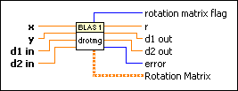

drotmg - Fast Givens Rotation Parameters (DBL) VI
Owning Palette: Basic Linear Algebra Subroutines VIs
Requires: Full Development System
Calculates a fast Givens rotation matrix that zeros the y component of a two-element real vector and calculates the related parameters. You can use the output parameters in the drotm - Fast Givens Rotation (DBL) VI.

 Add to the block diagram Add to the block diagram |
 Find on the palette Find on the palette |